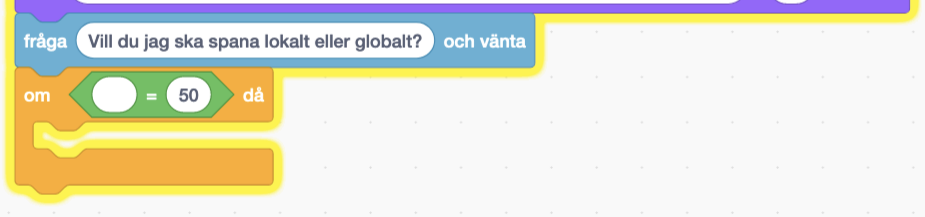
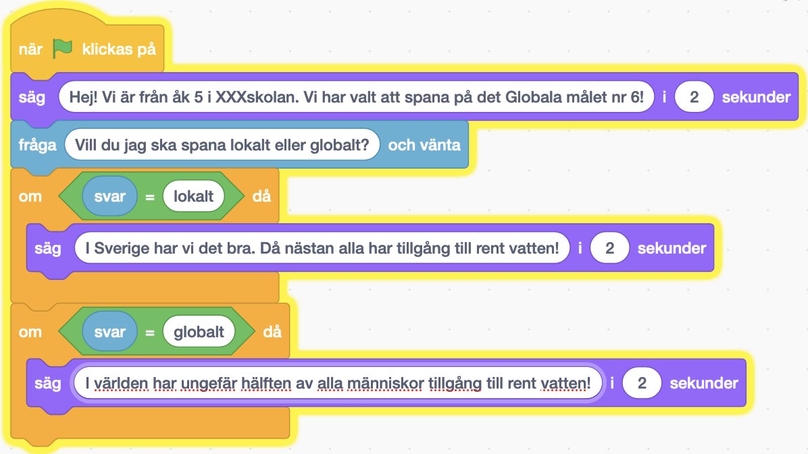
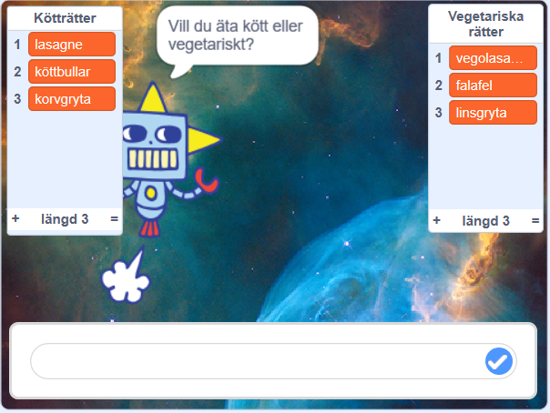

>
>Här får du skapa och koda två Globalspanare som hjälper dig spana på de Globala målen. Välj ett globalt mål och låt Globalspanaren nr 1 berätta om vad du upptäcker när du spanar lokalt där du bor och låt den även spana globalt. Låt Globalspanaren nr 2 berätta och ge förslag på en ide eller uppfinning som gör ditt globala mål bättre. Dina två Globalspanare blir de som redovisar vad du lärt dig i projektet och om ditt Globala mål. I den här uppgiften får du prova på att koda villkor, operatorer och om du vill även slump i Scratch.
Klicka på bilden nedanför för att testa ett exempelprojekt med två Globalspanare: >
Bläddra dig fram genom denna guide, steg för steg. Öppna även verktyget Scratch på sajten www.scratch.mit.edu där du kodar och skapar själva Globalspanar-projektet utifrån Kodbokens instruktioner.
Dax att börja koda!
Här ska du välja en ny bakgrund och välja din första globalspanare.
VAD SKA JAG GÖRA?
Titta i videon ovan hur du ska:
INSTRUKTION HUR JAG GÖR STEG-FÖR-STEG:
Logga in på Scratch och öppna ett nytt projekt genom att trycka på Skapa på Scratch startsida.
Ta bort Katt-sprajten i projektet genom att klicka på soptunnan på den lilla kattbilden under scenen. Då försvinner katten ur projektet.

Dax att välja en figur som ska vara din Globalspanare nr 1. I vårt exempelprojekt har vi valt sprajten men du väljer vilken figur du vill som din Globalspanare nr 1.


Nu har du din Globalspanare nr 1 och en bakgrund. Nu ska vi börja koda vad din Globalspanare nr 1 ska berätta om.
Nu ska du få din robot att fråga vad du behöver hjälp med. Det kan vara att exempelvis hjälpa dig att välja maträtt till middag, välja kläder om regn eller soligt ute eller peppa dig med glad musik om du känner dig ledsen. I vårt exempel har vi valt att skapa en robot som hjälper oss välja middagsmat.
VAD SKA JAG GÖRA?
Se i videon ovan hur du ska:
INSTRUKTION HUR JAG GÖR STEG-FÖR-STEG:
Se först till att din Globalspanarsprajt är vald, genom att klicka på den lilla sprajt-figuren under scenen så den blir blåmarkerad. Nu kan du börja koda din Globalspanare nr 1.
Från tema HÄNDELSER drar du in kodblocket När GRÖN FLAGGA klickas på och lägger det på skriptytan för din Globalspanare. Det här är koden för startknappen på ditt projekt.


Testa koden! Klicka på den lilla flaggan ovanför scenen och testa koden. Presenterar sig Globalspanaren?
Nu vill vi att Globalspanaren ska ställa en fråga som vi ska skriva in svaret på. Då behöver vi ett annat block. Under tema KÄNNA AV finns blocket fråga Vad heter du? och vänta. Dra sedan in blocket och sätt ihop det underst med de andra kodblocken på skriptytan.
Klicka på texten i kodblocket du lade till och ändra texten Vad heter du? till frågan: Vill du jag ska spana lokalt eller globalt? som din din robot ska ställa dig, så den vet hur den bäst kan hjälpa dig.

Tänk på! Det är viktigt att skriva rätt i det svar ger till er Globalspanare, då svaret måste vara exakt det samma som roboten efterfrågar,lokalt eller globalt? Tänk på att stava exakt så som Globalspanaren frågar.
Tips! Har ni en egen ide till fråga som passar er Globalspanare? Självklart kan ni välja den. Tänk på att välja en fråga som man kan svara så man får svar på vad ni spanat på lokalt eller globalt. Frågan måste kunna ha två svar som alternativ.

Testa ditt projekt! Klicka på START-flaggan. Frågar Globalspanaren din fråga? Vad händer om du skriver ett svar i nedre textrutan?
Nu har vi en Globalspanare nr 1 som presenterar er klass och skola, vilket globalt mål och som ställer frågor. Men hur ska den veta ditt svar? Vi måste koda vidare.
För att din Globalspanare ska kunna hjälpa dig att berätta om vad klassen lärt sig om ert Globala mål måste den veta vad du svarar på frågan. Dessutom behöver den instruktioner om vad den ska berätta om göra beroende på vilket svar du ger den. Då använder vi kod för att skapa ett villkor som säger att OM svaret är exempelvis lokalt så berättar globalspanaren det här. Exempelvis: Om svaret är "lokalt" då berättar du om vad ni spanat om lokalt.
VAD SKA JAG GÖRA?
Se i videon ovan hur du ska:
INSTRUKTION HUR JAG GÖR STEG-FÖR-STEG:



Skriv sedan in det första av de svarsval du gav i Globalspanarens fråga, exempelvis svaret lokalt så som vår Globalspanare efterfrågar i exemplet i denna instruktion. ("Vill du att jag berättar om vår spaning för mål nr 6 lokalt eller globalt?").
Nu ska vi ändra så att svaret blir lika med ett av Globalspanarens givna svarsval i det gröna operatorblocket. Klicka på variabelsiffran 50 och skriv istället ett av Globalspanarens två svarsval, lokalt eller globalt. I vårt exempel med vår Globalspanare skriver vi svarsvalet lokalt.



Testa koden! Vad händer när du svarar Globalspanaren ett av svarsvalen? Fungerar de olika svaren?
Nu har vi en Globalspanare som kan hjälpa dig och berätta om klassens spaningar lokalt och globalt kring det Globala målet klassen valt! Men visst vore det kul om den spelade lite musik och rörde på sig! Vi pimpar vår Globalspanare lite!
Nu ska vi lägga på lite musik eller ljudeffekter till din Globalspanares olika svar.
VAD SKA JAG GÖRA?
Se i videon ovan hur du ska:
INSTRUKTION HUR JAG GÖR STEG-FÖR-STEG:

Tips! Ibland kan det stå något annat ljud än just ljudet Pop i kodblocket. Det är ok, välj det ändå.
Testa koden! Kör igång ditt projekt och testa koden. Hörs det ett ljud efter att Globalspanaren svarat på ditt knappval? Om du hör ljudet så vet du att din Globalspanare kan skapa ljud. Om du inget hör, kolla att högtalarna på din dator är på och volymen bra och prova att starta projektet igen.


Gör om steg 2 och 3 och välj ditt andra ljud till ditt projekt. I vårt exempelprojekt har vi valt två likadana datorljud som heter computer beep.
När du är nöjd klickar du på fliken KOD i övre vänstra hörnet av Scratch, så kommer du tillbaka till Globalspanarens skriptyta med all kod igen.


Testa koden! Spelar Globalspanaren dina nya ljud när du testar dina olika svarsknappar?
Nu har vi en Globalspanare som svarar och som spelar ljud. Kul om den rör sig lite också. Vi lägger till kod för rörelse!
För att göra Globalspanaren mer levande kan den gärna få röra sig. Det kan man lösa på olika sätt för att få fram olika rörelser.
VAD SKA JAG GÖRA?
Se i videon ovan hur du ska:
INSTRUKTION HUR JAG GÖR STEG-FÖR-STEG:

2.. För att Globalspanaren alltid ska ha samma startpunkt varje gång du startar om, behöver du lägga in en startposition i koden. Se först till att din Globalspanare står på det ställe där du vill den alltid ska starta, du kan dra Globalspanar-sprajten dit du vill den ska stå. Under tema RÖRELSE finns kodblocket gå till x: och y: . Dra in detta block och lägg det direkt under blocket När GRÖN FLAGGA klickas på.

Testa koden! Vad händer när du kör koden? Rör sig Globalspanaren när den svarat dig? Hoppar den tillbaka till sin startposition varje gång du klickar på den gröna flaggan?


Testa koden! Vad händer när du kör koden? Rör sig Globalspanaren? Byter den klädslar?
Tips! Om din sprajt saknar fler klädslar, eller om du ritat din egen sprajt, kan du skapa fler klädslar genom att exempelvis kopiera sprajtens enda klädsel (högerklicka på den enda klädsel som finns och välj kopiera, så får du en till likadan) och sedan ändra lite på den nya klädseln som skapades. Kanske du vill ändra färg på sprajten med hink-verktyget, eller måla dit en glad mun eller stora ögon?
Grattis, nu har du gjort klart uppgiften. Om du har följt vår instruktion ser den färdiga koden ut ungefär såhär:

Glöm inte att spara ditt projekt! Döp det gärna till uppgiftens namn så att du enkelt kan hitta den igen.
Testa ditt projekt
Visa gärna någon det som du har gjort och låt dem testa. Tryck på DELA för att andra ska kunna hitta spelet på Scratch. Gå ut till projektsidan och låt någon annan testa spelet!
OBS!! Lägg till kod för Globalspanare nr 2 - Klassens ide´för att förbättra det Globala målet.
OBS!!!!! Ta bort ## Utmaning Har du tid över? Här kommer en utmaning för dig som vill fortsätta.
Slumpa fram fler svar 
För att din ska kännas mer som att den är en smart robot som kan "tänka själv", kan du lägga till att den ska slumpa fram olika svar till dig. Då varierar den svaren varje gång du ber den svara. För att roboten ska kunna slumpa behöver den olika svar i en lista. Den behöver en lista för vardera val vi svarat på, exempelvis om vi svarat att vi vill äta vegetariskt eller kött i vår Matrobot, så behöver vi skapa två listor, en med vegetariska rätter att välja mellan och en för kötträtter. Vi börjar med att skapa två listor med olika savrsval.


Gör en exakt likadan lista till som du döper för ditt andra svarsval, som i vårt exempel blir Kötträtter med vår Matrobot.
Nu har du fått fram två listor som heter dina valda namn (exempelvis Vegetariska rätter och Kötträtter). Det syns bland dina block och även som två tomma listor på scenen bredvid din robot.


Nu ska du lägga till tre stycken olika svar i respektive lista, som roboten kan slumpa fram när den ska svara. Under tema VARIABLER drar du ut blocket lägg till grej i Kötträtter. (istället för vårt exempel med "Kötträtter" står det här ett av dina skapade namn på en av dina svarslistor.) Lägg blocket fritt på din skriptyta med kod.
Istället för ordet grej skriver du nu in ett svarsalternativ som passar för just denna lista. I vårt exempel med listan Kötträtter kan ett svar från Matroboten exempelvis vara lasagne.
Dra ut två till likadana kodblock till och byt ut ordet grej till andra svar som passar för denna lista. I vårt exempel blir det köttbullar och korvgryta. Sätt alla de tre kodblocken under varandra så de sitter ihop.


Ändra sedan variablen i operatorn så att det står slumptal 1 till 3, då du endast har 3 svarsval i din lista.


Testa koden! Vad händer när roboten svarar dig? Slumpar den fram olika svar varje gång du startar om med gröna flaggan? Tips! Sitter orden ihop i svaret? Lägg då till ett mellanslag efter texten "Då lagar jag " så får du mellanrumm mellan din svarsmening och ditt slumpade svar.

Notera att du behöver ändra namnet på listan i kodblocket, så det är ett block med vardera listas namn i sig.
Testa koden! Ger roboten slumpade svar från de två olika listorna? Är listorna synliga på scenen?
Nu har du en robot som kan slumpa fram svar. Utmana dig genom att lägga till fler svar och ändra i antalet som roboten kan slumpa fram. Kanske till och med fler listor?
Vad är en loop?
Varför kan det vara bra att använda en loop?
Vad är ett villkor?
Vad är slump?
Varför kan inte roboten förstå dig om du skriver fel svar på frågan?